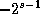
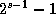
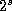
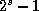

Common Lisp the Language, 2nd Edition


Next: Defining New Type
Up: Type Specifiers
Previous: Type Specifiers That
The following type specifiers are, for the most part,
abbreviations for other type specifiers that would be far too
verbose to write out explicitly (using, for example, member).
- (integer low high)
-
Denotes the integers between
low and high. The limits low and high
must each be an integer, a list of an integer, or unspecified.
An integer is an inclusive limit,
a list of an integer is an exclusive limit, and
* means that a limit does not exist
and so effectively denotes minus or plus infinity, respectively.
The type fixnum is simply a name
for (integer smallest largest) for implementation-dependent
values of smallest and largest
(see most-negative-fixnum and most-positive-fixnum).
The type (integer 0 1)
is so useful that it has the special name bit.
- (mod n)
-
Denotes the set of non-negative integers less than n.
This is equivalent to (integer 0 n-1)
or to (integer 0 (n)).
- (signed-byte s)
-
Denotes the set of integers that can be represented
in two's-complement form in a byte of s bits. This is
equivalent to
(integer  ).
Simply signed-byte or (signed-byte *) is the same as integer.
- (unsigned-byte s)
-
Denotes the set of non-negative integers that can be
represented in a byte of s bits. This is equivalent to (mod
), that is, (integer 0 ).
Simply unsigned-byte or (unsigned-byte *) is the same as
(integer 0 *), the set of non-negative integers.
- (rational low high)
-
Denotes the rationals between
low and high. The limits low and high
must each be a rational, a list of a rational, or unspecified.
A rational is an inclusive limit,
a list of a rational is an exclusive limit, and
* means that a limit does not exist
and so effectively denotes minus or plus infinity, respectively.
- (float low high)
-
Denotes the set of floating-point numbers between
low and high. The limits low and high
must each be a floating-point number, a list of a floating-point number,
or unspecified; a floating-point number is an inclusive limit, a list of a
floating-point number is an exclusive limit, and
* means that a limit does not exist
and so effectively denotes minus or plus infinity, respectively.
In a similar manner, one may use:
(short-float low high)
(single-float low high)
(double-float low high)
(long-float low high)
In this case, if a limit is a floating-point
number (or a list of one), it must be one of the appropriate format.

X3J13 voted in March 1989 (REAL-NUMBER-TYPE) to add a list form of the real
type specifier to denote an interval of real numbers.
- (real low high)
-
Denotes the real numbers between
low and high. The limits low and high
must each be a real, a list of a real, or unspecified.
A real is an inclusive limit,
a list of a real is an exclusive limit, and
* means that a limit does not exist
and so effectively denotes minus or plus infinity, respectively.


- (string size)
-
Means the same as
(array string-char (size)): the set of strings of the indicated size.
- (simple-string size)
-
Means the same
as (simple-array string-char (size)): the set of simple
strings of the indicated size.

X3J13 voted in March 1989 (CHARACTER-PROPOSAL)
to eliminate the type string-char and to redefine the type
string to be the union of one or more specialized vector
types, the types of whose elements are subtypes of the type character.
Similarly, the type
simple-string is redefined to be the union of one or more specialized
simple vector
types, the types of whose elements are subtypes of the type character.
- (base-string size)
-
Means the same as
(vector base-character size): the set of base
strings of the indicated size.
- (simple-base-string size)
-
Means the same
as (simple-array base-character (size)): the set of simple base
strings of the indicated size.
- (bit-vector size)
-
Means the same as (array bit (size)):
the set of bit-vectors of the indicated size.
- (simple-bit-vector size)
-
This means the same as
(simple-array bit (size)): the set of bit-vectors of
the indicated size.
Next: Defining New Type
Up: Type Specifiers
Previous: Type Specifiers That
AI.Repository@cs.cmu.edu